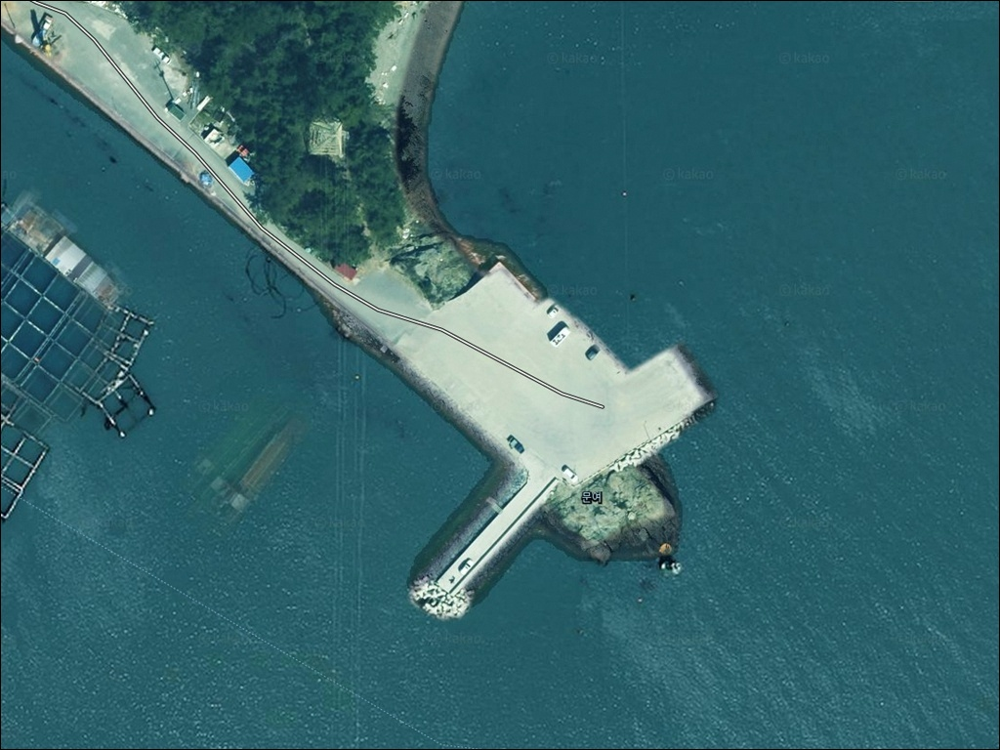
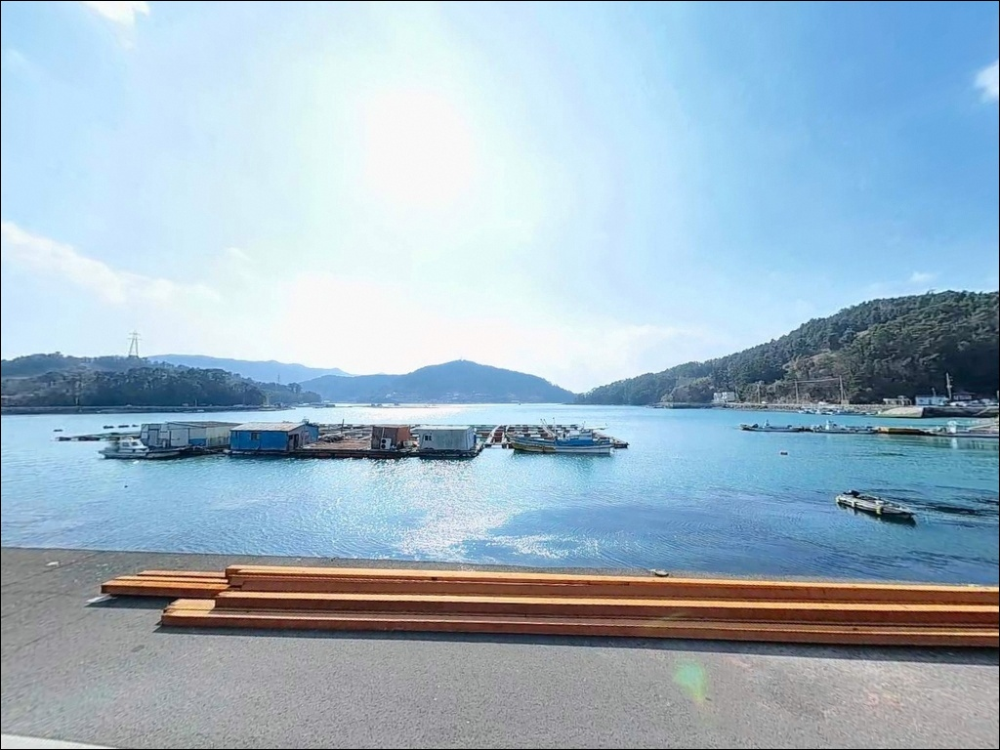
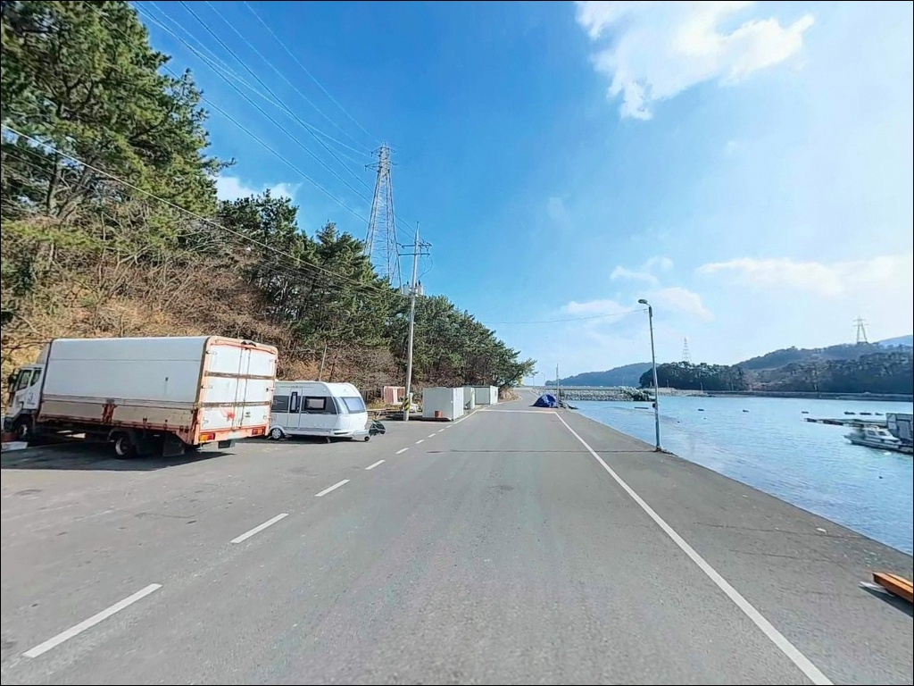
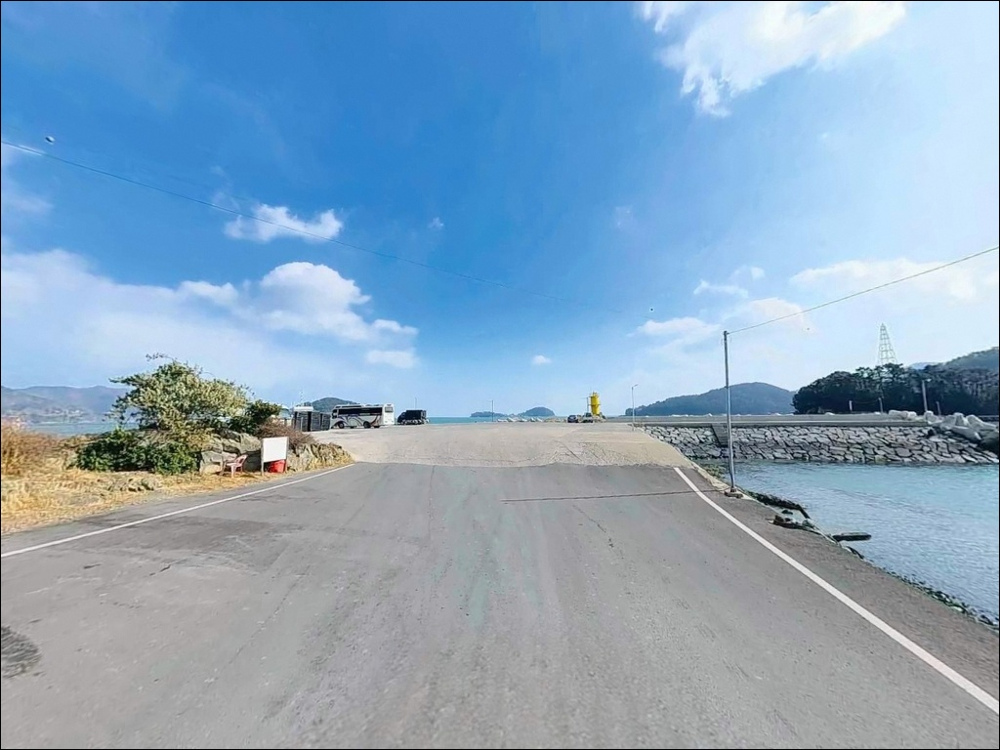
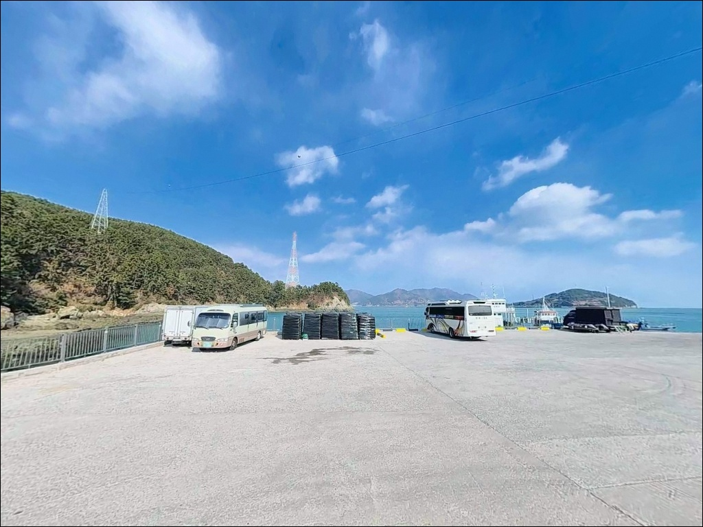
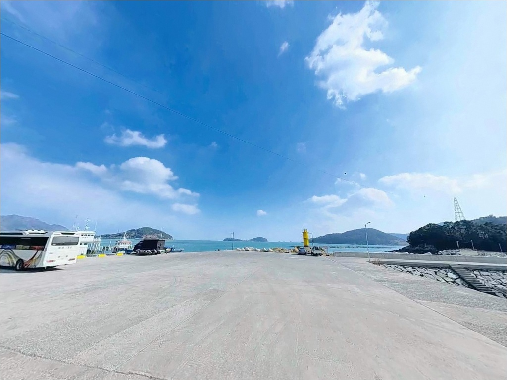
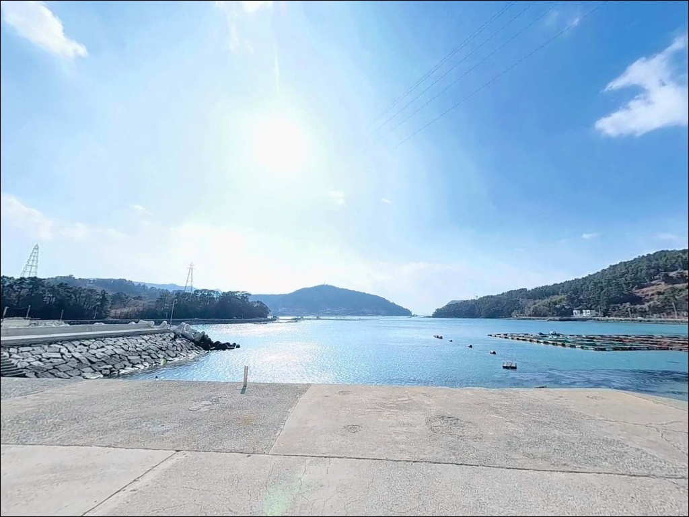
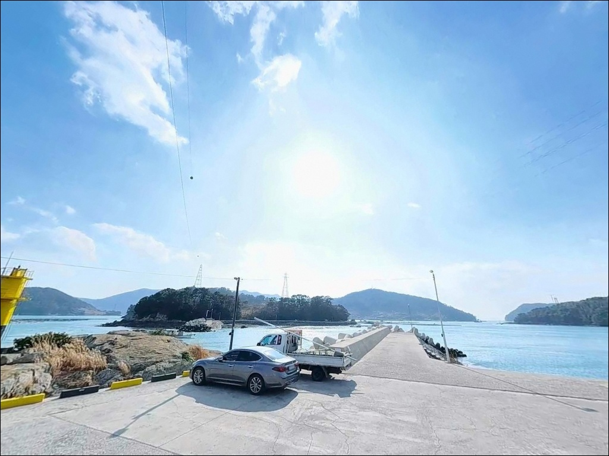
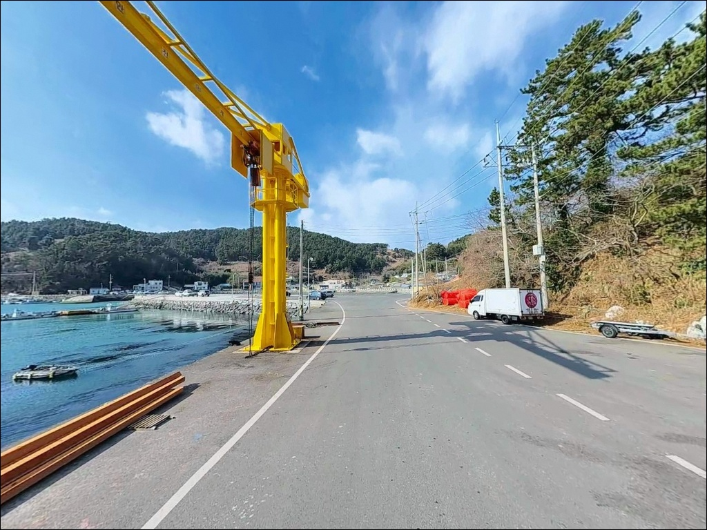

사리 물때 채비 날아갈 때, 여수 화태도 문여방파제 조금 물때 찌낚시
이 페이지에는 광고(제휴 링크 포함)가 있으며, 광고 링크를 통해 구매하면 운영자가 판매 수익 또는 수수료를 받을 수 있습니다. 포인트 사진: 카카오맵 스카이뷰·로드뷰. 이 페이지의 지도·사진 이미지는 카카오맵의 실제 서비스 이미지와 다를 수 있습니다.


포인트 안내
문여방파제
전남 여수시 남면 화태리 산 182-1
화태도 본섬과 문여 사이 물골은
조류가 세차게 흐르는 구간입니다.
사리 전후에는 중량감 있는 채비가 아니면
컨트롤 자체가 힘들어지는 수준이며,
이 조건을 모르고 들어가면
채비 손실만 반복하다 철수하게 됩니다.
이 글은 문여방파제의
진입 동선, 차박 여건, 물때 판단 기준,
낚시 스타일별 공략 조건에 집중합니다.
조황 단정이나 특정 어종 보장은
이 글의 범위에 포함되지 않습니다.

1. 진입 동선과 포인트 접근성
화태도는 화태대교를 통해 육로로 진입합니다.
화태대교는 여수시 돌산읍 신복리에서
남면 화태리를 잇는 사장교로
총 길이 1,345m 규모이며,
2015년 12월 개통 이후 차량 통행이 가능합니다.
화태대교 진입 기점은
돌산읍 신기마을(신기항) 방향입니다.
화태도 진입 후 화태마을 방향으로 이동하면
문여방파제에 닿습니다.
섬 내 도로는 포장도로로 연결되어 있으며,
화태마을 입구에서 좌회전 후
약 500m 거리에 방파제가 있습니다.
마지막 구간은 좁은 해안도로 형태이며
차량 교행이 제한되는 구간이 포함되어 있어
초행이라면 서행이 기본입니다.
방파제 앞에는 넓은 공터가 형성되어 있으며
이 공터에서 회차가 가능합니다.
대형 차량도 공터 내 방향 전환이 가능하지만,
진입로 구간 자체는 폭이 좁으므로
캠핑 트레일러나 대형 캠퍼밴은
출발 전 위성지도로 경로를 확인하는 편이 안전합니다.

2. 차박 환경과 야간 체류 여건
문여방파제 앞 공터는
낚시인들이 차박 거점으로 활용하는 공간입니다.
평탄한 콘크리트 부지이며
여름 성수기에는 차량으로 가득 차는 편이라,
평일 출조 또는 이른 도착이 주차 확보에 유리합니다.
방파제에는 가로등이 설치되어 있어
야간 체류 환경이 상대적으로 안정적입니다.
민가 밀집도는 낮은 편이며
차박 프라이버시는 양호한 수준입니다.
외항 방향은 트여 있어
남·서방향 기상 변화 시
파도와 바람 영향을 직접 받는 구조이므로
기상 예보 확인이 선행되어야 합니다.
화태도는 다도해해상국립공원 구역에 포함됩니다.
국립공원 구역 내 야영·취사는
지정 구역 외에서 원칙적으로 제한됩니다.
방파제 공터에서의 야영 가능 여부는
출조 전 관할 기관을 통해 확인하는 것이 먼저입니다.


3. 주변 편의시설 및 인프라 현황
화태도 내에는 편의점이나 대형 마트가 없습니다.
화태마을에 소규모 식당과
간이 편의시설이 분포하는 수준이며,
낚시 소품이나 식재료, 얼음, 연료 등은
화태대교를 건너기 전에 모두 준비하는 것이
현실적인 방법입니다.
화태대교를 건너 돌산읍 신기마을(신기항) 방향으로
나오면 마을 매점 수준의 시설이 있습니다.
여수 시내까지는 돌산대교를 경유한
추가 이동이 필요합니다.
응급 상황 발생 시 여수전남병원, 여수성심병원 등
종합병원이 반경 10~15km 이내에 있으며
돌산대교-화태대교 경로로 접근합니다.
화태도 내에 민박집이 운영되어
야영이 여의치 않을 경우 이용이 가능합니다.
장거리 출조라면 민박을 사전에 예약해두는 것이
야간 낚시 후 체류 방법으로
현실적인 대안이 됩니다.

4. 조류가 갈리는 포인트에서 꼭 챙겨야 할 준비사항
문여방파제에서 가장 먼저 확인할 것은
물때입니다.
화태도 앞 물골은 조류가 세차기로 알려진 구간으로,
사리 전후에는 채비 컨트롤이 어려워지는
수준까지 조류가 강해집니다.
바다타임에서 남면 화태 기준 물때를 확인하고
조금 전후 또는 물때 완만한 타이밍을 잡아
출발 시각을 맞추는 것이 기본 전략입니다.
릴찌낚시란 낚싯줄을 릴에 감아
원하는 수심층으로 찌를 흘려보내는 낚시 방식으로,
조류가 흐르는 방파제 외항 구간에서
감성돔을 공략하는 데 가장 효율적입니다.
외항 방향은 남·서풍 기상 변화 시
파도 영향이 직접 들어오는 구조입니다.
기상청 해상 예보를 출조 당일 아침
다시 한번 확인하는 것이
포인트 낭비를 막는 조건이며,
석축 발판은 이끼가 낀 경우 미끄러울 수 있어
미끄럼 방지화와 구명조끼는 필수입니다.
방파제 공터는 어민과 낚시인이 함께 쓰는 공간입니다.
어선 하적 구역 주변에는 주차를 삼가고,
쓰레기는 전량 수거해 귀가 시 처리하는 것이
기본 매너입니다.

5. 지형 기반 낚시 여건 분석
문여방파제의 핵심은
화태도 본섬과 문여 사이에 형성된 물골입니다.
두라도·나발도 방향으로 열린 이 물골에는
조류가 세차게 흐르며,
수심 7~10m 이상의 급심 구간이
방파제 끝단 바로 앞에서 형성됩니다.
석축 방파제 발판은 비교적 안정적이며
방파제 끝단과 갯바위 연결부 구간에서
다양한 낚시 방식을 운용할 수 있는 구조입니다.
내항 쪽은 조류가 상대적으로 약하고
외항 쪽은 물골 사이로 조류 흐름이 살아 있어,
자리에 따라 채비 운용 방식이 달라집니다.
화태도 주변에는 월호도, 나발도,
대두라도·소두라도 등 여러 섬이 감싸는 지형이라
가을에 유입된 어종이 초겨울까지 머무는
구조가 형성되는 편입니다.
가두리 양식장이 섬 주변에 분포하여
수온과 먹이 여건이 안정적으로 유지되는
환경 조건도 이 포인트의 배경이 됩니다.
최신 조황은 가기 전에 꼭 검색해 보시기 바랍니다.


6. 포인트에 어울리는 낚시 스타일
릴찌낚시가 이 방파제에서 가장 기본적인 방식입니다.
1호 구멍찌 채비로 물골 방향 조류를 타며
감성돔을 겨냥하는 운용이 이 포인트의 전형입니다.
조류가 완만한 타이밍에는
반유동 채비로 수심을 잡아
방파제 끝단 앞 급심 구간을 노리는 방식이
기본 공략 패턴입니다.
에깅과 루어낚시도 이 포인트 구조에 잘 맞습니다.
방파제 주변 갯바위 지형과
수심이 확보된 외항 구간은
갑오징어·무늬오징어 에깅에 유리한 조건이며,
야간 시간대에는 볼락 라이트게임도
석축 끝단과 여밭 경계선을 따라
효과적인 방식입니다.
갈치 야간낚시는 가을 시즌에 이 방파제에서
이루어지는 대표 낚시 방식 중 하나이며,
겨울에는 학꽁치 낚시 패턴도 알려져 있습니다.
원투낚시는 발판 여건이 안정적인 구간에서
장거리 캐스팅 없이도 수심 깊은 구간에
채비가 닿는 구조라
초행 낚시인도 진입하기 쉬운 방식입니다.

7. 대안 포인트와 플랜 B 동선
문여방파제 주차 공간이 꽉 찼거나
조류가 지나치게 강해 운용이 어려울 때는
화태도 독정리방파제가 첫 번째 대안입니다.
같은 화태도 내 방파제로 차량으로 5분 거리이며,
석축 구조로 찌낚시·루어·원투 모두 가능합니다.
단, 차박 공간은 문여방파제보다 좁은 편입니다.
화태대교를 건너 돌산도 방향으로 나오면
신기방파제가 있습니다.
화태대교에서 빠져나오는 즉시 접근 가능한 대체지로,
갑오징어·감성돔·볼락이 기대되는 구간이며
여객선 터미널 인근에 공중화장실이 있어
편의 면에서도 유리한 편입니다.
차박 대체 거점으로는
화태도 내 월전선착장이 활용됩니다.
화태도 내에서 가장 넓은 주차 공간과
평탄한 부지를 갖춘 것으로 알려진 곳이며,
문여방파제에서 낚시 후
조용한 체류가 필요할 때 이동하는 대안입니다.

물골 조류를 알고 들어가면
문여방파제는 달라집니다
릴찌낚시로 감성돔을 노리거나
야간 에깅과 갈치낚시를 병행하는 낚시인이라면
문여방파제의 물골 조류 구조는
잘 맞는 조건입니다.
석축 발판의 안정적인 낚시 여건과
넓은 공터의 차박 환경이 더해져
하룻밤 머물며 낚시하기에
나쁘지 않은 포인트입니다.
반면 사리 전후에 물때 계산 없이 진입하면
어떤 채비를 써도 조류를 버티기 어렵습니다.
국립공원 구역 야영 확인,
출발 전 자급 준비,
물때와 기상 이중 확인을 갖추고 간다면
화태도에서 기억에 남는 출조가 될 수 있습니다.
화태대교로 이어진 섬에서
물골 조류를 옆에 두고 하룻밤 머무는 차박 여행이라면,
국립공원 야영 확인만 먼저 해두면
낚시와 차박을 동시에 즐길 수 있는
출조지입니다.